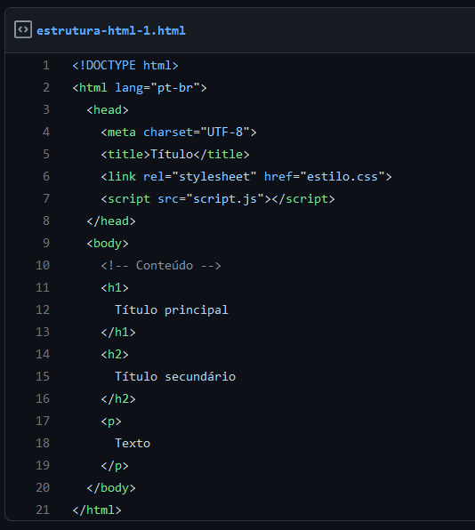
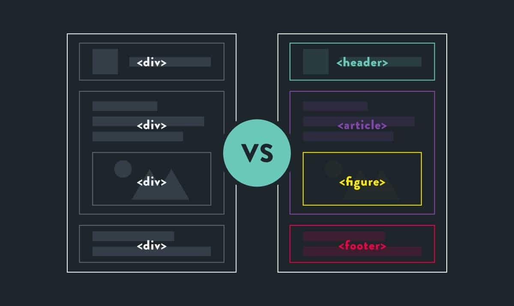

Introdução ao HTML
HTML (HyperText Markup Language) é a linguagem de marcação utilizada para estruturar e exibir conteúdo na web. É a base de qualquer página da internet, permitindo que textos, imagens, links, vídeos e outros elementos sejam organizados de forma compreensível para os navegadores. Diferente das linguagens de programação, o HTML não executa ações lógicas ou cálculos; seu papel é estruturar e descrever o conteúdo. Os navegadores, como o Chrome ou Firefox, interpretam esse conteúdo e o exibem ao usuário de forma visual.
A estrutura básica de um documento HTML inclui:

HTML trabalha em conjunto com CSS (para estilização) e JavaScript (para interatividade), formando a tríade essencial do desenvolvimento web. Aprender HTML é o primeiro passo para criar sites e aplicações web. É uma linguagem fácil de começar e fundamental para quem deseja seguir carreira na área de tecnologia.
Formatações HTML
O HTML oferece diversas tags de formatação para organizar e destacar o conteúdo em uma página da web. Essas marcações ajudam a estruturar melhor o texto, tornando-o mais legível e visualmente atraente para o usuário.
Veja a seguir as formatações mais comuns:
1. Títulos (h1 ao h6) Os títulos são usados para destacar seções do conteúdo.
2. Parágrafos ( p ) A tag p define parágrafos de texto.
5. Sublinhado ( u )
6. Quebra de linha ( br )
Essas formatações são a base para escrever páginas HTML bem estruturadas e compreensíveis. Ao combinar essas tags corretamente, é possível criar conteúdos claros, organizados e acessíveis para todos os usuários.
HTML Semântico
HTML Semântico é o uso de tags que têm significado claro e específico sobre o conteúdo que elas envolvem. Em vez de usar apenas "div" ou "span" para tudo, o HTML5 introduziu elementos como "header", "nav", "main", "article", "section" e "footer" para dar mais clareza e estrutura ao código. Essas tags a judam tanto os desenvolvedores quanto os navegadores e mecanismos de busca a entenderem melhor a função de cada parte da página. Além disso, o HTML semântico melhora a acessibilidade, facilitando o uso por leitores de tela.
Exemplo ilustrativo:

Usar HTML semântico é uma boa prática no desenvolvimento web moderno e contribui para sites mais organizados, acessíveis e otimizados para SEO.